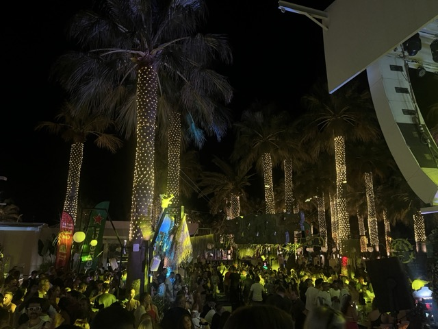
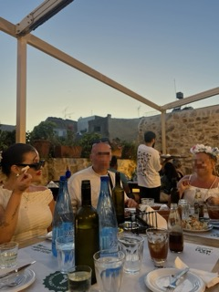

Ruoka, juhlat ja yhteisöllisyys
Kulttuuri näkyy Kreikassa kaikkialla: tavernoissa, juhlapäivissä, musiikissa ja ruuassa. Menneisyys sulautuu nykypäivään, josta paikalliset sekä turistit iloitsevat.
Turismi on yksi tärkeimmistä ja suurimmista elinkeinoista Kreetan saarella, joten maa on pyrkinyt ylläpitämään paikallisten yritysten ja palveluiden toimintaa. Turismin myötä historian muokkaamia perinteitä on säilynyt elossa, mutta myös jäänyt menneisyyteen. Esimerkiksi perinteiset kreikkalaiset tanssit ja musiikki ovat edelleen erittäin suosittuja ja opeteltuja. Alla linkki perinteiseen Zobra -tansssiin, jota tanssitaan juhlissa ja tapahtumissa ympäri Kreikkaa.
Kreikkalainen ruoka on tunnettu tuoreista raaka-aineista ja mielenkiintoisista yhdistelmistä. Perinteisiä ruokia ovat moussaka, souvlaki ja tzatziki. Monet turistit tuntevat mainitut ruuat, mutta pääsevät kokeilemaan uusia makuelämyksiä paikallisissa tavernoissa. Kreikkalaiset tavernat ovat upea mahdollisuus tutustua maan perinteisiin, kuten sanastoon "opa!" (onnen huudahdus) ja "efcharisto" (kiitos). Paikalliset ovat erittäin ylpeitä kulttuuristaan ja haluavatkin jakaa sitä vierailijoiden kanssa.

Paikallisten tapa juhlia järkyttää suomalaiset hillityt juhlijat. Tapahtumiin ja juhliin kutsutaan koko suku sekä naapurit (hääkutsuissa yleistä on kutsun lähettäminen perheelle X, sisältäen useita aveceja per. henkilö). Pääsin itse osallistumaan kreikkalaisiin häihin vuoden 2024 syksyllä, jolloin olin maassa ehtinyt olla noin vuoden. Häät silti onnistuivat yllättämään minut, mutta positiivisella tavalla. Juhlat kestivät myöhään, ruokaa tarjoiltiin jatkuvalla tahdilla, kaikki tanssivat ja lahjojen antaminen oli oma ohjelmanumero.